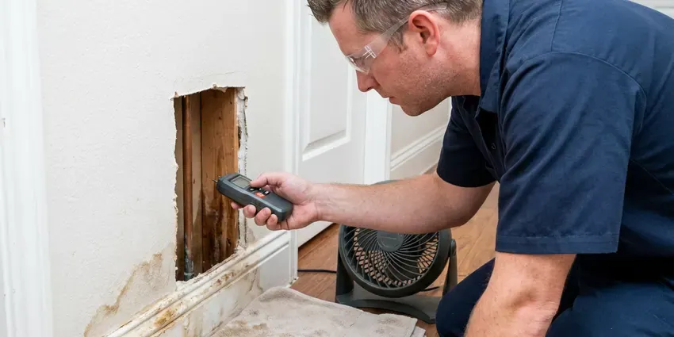

Sewer Line Inspection in Oshkosh, WI
For homeowners in Oshkosh, WI, a proper sewer line inspection is key for maintaining a healthy plumbing system. HKV Plumbing uses advanced camera technology to diagnose issues.
- Same-Day Camera Inspections
- Fast, Accurate Diagnostics
- Clear Reporting
- Licensed, Certified Plumbers
Need a Sewer Line Inspection in Oshkosh, WI?
Don't let a hidden sewer problem become a major headache. Contact HKV Plumbing today for a complete evaluation.
Dependable Sewer Line Inspection Services in Oshkosh, WI
When you need a clear picture of your underground plumbing, HKV Plumbing is your trusted partner for sewer line inspection in Oshkosh, WI. Our experienced plumbers can identify problems caused by tree roots, shifting soil or aging pipes, so you understand the condition of your system before making any repair choices.
Our expertise includes:
- Locating precise pipe damage points
- Recorded video and written reports for real estate sales
- Sonde locating to mark depth and position of problems

Additional Plumbing Maintenance Services in Oshkosh, WI
Our maintenance and specialty plumbing services in Oshkosh, WI catch small problems before they become emergencies.


Customers
Why Choose HKV Plumbing for Sewer Line Inspection in Oshkosh, WI?
Understanding the condition of your sewer lines is essential for preventing costly future repairs and maintaining your property's value. Our detailed inspections provide peace of mind and clear next steps.
- Clear Video, High-definition footage shows cracks, roots and offsets clearly.
- Pinpoint Accuracy, Our camera inspections reveal the precise location and nature of sewer line problems, eliminating guesswork.
- Peace of Mind, Know the exact condition of your sewer system and plan for any necessary maintenance or repairs.
Citywide Coverage
Wherever your property is in Oshkosh, we can usually schedule a sewer inspection within a day or two. We work around real estate deadlines and inspection periods.
Experienced Team
Our technicians have inspected thousands of feet of sewer pipe and know how to read every type of defect. They can tell the difference between minor scale and a structural break.
Safety-First Approach
Our inspections are non-invasive and use existing cleanouts or vents whenever possible. If a cleanout must be installed, it is done to the plumbing code adopted by your city or county.
Trusted Certified Oshkosh Plumbing Services Professionals
At HKV Plumbing, we take pride in providing certified plumbing services throughout Oshkosh, WI. Backed by recognized industry credentials, our experienced plumbers combine technical skill with genuine customer care. Whether it is repair, installation, or maintenance, we follow strict safety and quality standards to deliver long-lasting results you can trust.
Call Us Now PHCC Plumbing Contractor Recognition
PHCC Plumbing Contractor Recognition Better Business Bureau (BBB) Accreditation
Better Business Bureau (BBB) Accreditation Angi Certified Pro
Angi Certified Pro ISO 9001 Quality Management Certification
ISO 9001 Quality Management CertificationDetailed Sewer Line Inspection Services in Oshkosh, WI
Post-Clearing Sewer Camera Inspection in Oshkosh
After a backup is cleared, a camera inspection shows why it happened. It might be grease, roots, a broken section or an object stuck in the line. Knowing the cause helps you avoid repeat backups. We often recommend an inspection after any main line clearing.

Locating Lost Items and Pipe Mapping in Oshkosh, WI
Beyond diagnosing damage, our sewer cameras are also very useful for locating lost items dropped down drains, such as jewelry or small tools. We can also use the camera's transmitter to accurately map the layout of your underground sewer lines, which is especially useful for older homes in Oshkosh, WI where original blueprints might be unavailable or inaccurate. This mapping helps plan future landscaping or construction work.
Video Camera Inspection for Blockages in Oshkosh
When drains slow down or stop completely, a blockage is often the cause. Our sewer camera inspection can pinpoint exactly where the blockage is located and what's causing it, whether it's grease buildup, foreign objects or sediment. This precision allows us to perform targeted clearing without unnecessary digging, saving you time and money. We can work through bends and junctions to get a full view of the pipe's interior.
Clay and Cast Iron Pipe Inspections in Oshkosh, WI
Many older homes in Oshkosh, WI feature clay or cast iron sewer pipes, which are prone to specific issues like cracking, corrosion and joint separation over time. Our sewer camera equipment is designed to navigate these older pipe materials effectively. We can identify signs of wear and tear, rust or weak points, providing accurate assessments for potential repairs or replacements, which is crucial for maintaining historic properties.
Residential Sewer Line Inspections in Oshkosh
HKV Plumbing specializes in residential sewer line inspections, identifying issues like root intrusion, pipe corrosion and blockages in your home's main drain. We use flexible, waterproof cameras to navigate the entire length of your sewer line, from your house to the municipal connection. This service is especially important for older homes in Oshkosh that might have clay or cast iron pipes susceptible to damage over time. Our detailed reports help you understand the health of your plumbing system.
Pre-Purchase Sewer Line Inspection in Oshkosh
Standard home inspections usually do not include a camera look inside the sewer line. A pre-purchase inspection shows whether the line has roots, cracks, bellies or other problems before you close. That information can help you negotiate repairs or price with the seller. We provide a video and written report that fits typical real estate timelines.
Sewer Line Inspections for Commercial Properties in Oshkosh
Commercial properties in Oshkosh often have larger, more complex sewer systems that can experience heavy usage and added challenges. HKV Plumbing provides specialized sewer line inspection services for businesses, with minimal disruption to operations. We understand the importance of fast diagnosis and efficient service to keep your business running smoothly, addressing issues like grease traps or industrial waste buildup.

Preventative Sewer Line Inspections in Oshkosh, WI
Proactive maintenance is the best defense against major sewer line disasters. For homes and businesses in Oshkosh, WI, especially those with older plumbing or heavy landscaping, regular preventative sewer line inspections can catch minor issues before they become emergencies. We can identify early signs of root intrusion, minor cracks or sediment buildup, allowing for early intervention and extending the life of your sewer system.
Sewer Line Inspection Near Me in Oshkosh, WI
When you search for 'sewer line inspection near me' in Oshkosh, WI, you want a local company that understands the plumbing challenges of our area. HKV Plumbing is your trusted local expert, equipped with the knowledge and tools to quickly respond to your needs. We are familiar with the various types of sewer systems found throughout Oshkosh.
When you need a dependable sewer line inspection near me in Oshkosh, WI, HKV Plumbing is your local expert. We are familiar with the area's plumbing infrastructure and common issues affecting homes and commercial properties.
HKV Plumbing at a Glance
- Fully licensed plumbing team covering Oshkosh, WI
- 24/7 emergency service with same-day scheduling
- Upfront, flat-rate pricing before work begins
- 4.8-star rated by 448+ Wisconsin customers
Oshkosh Map
Oshkosh Information
- Population
- 66,184
- Area codes
- 920/414/262
- Service area
- Oshkosh and communities within 40 miles
- Nearby
- Appleton, Green Bay, Sheboygan, Wauwatosa
Older homes in Oshkosh, WI often have cast iron and clay sewer lines exposed to aggressive tree roots and ground movement, so a camera inspection is the most reliable way to know a line's true condition. Some older neighborhoods still have lead service lines, and many communities are working to replace them over time.
Expert Services
Trust our professionals for reliable HKV Plumbing solutions in Oshkosh, WI.
Our Specialized Plumbing Services in Oshkosh, WI
At HKV Plumbing, we provide a complete range of plumbing services across Oshkosh, WI. From leak detection to full system installations, our team ensures fast, precise, and affordable service for both residential and commercial properties. Explore our core services below:


How Our Sewer Line Inspection Process Works in Oshkosh, WI
Our sewer line inspection process is simple and quick, with clear results you can watch for yourself.
Request a Quote
Contact HKV Plumbing by calling (414) 432-4641 to schedule your sewer line inspection. We will discuss your concerns and set up a suitable appointment time.
Camera Insertion
Our technician will locate an access point, usually a cleanout, and insert a high-resolution camera into your sewer line. The camera is connected to a monitor for real-time viewing.
Detailed Video Analysis
We meticulously guide the camera through your pipes, recording footage to identify any blockages, cracks, root intrusions or other damage. We note the exact location and nature of any issues.
Frequently Asked Questions About Sewer Line Inspection in Oshkosh
The cost of a sewer line inspection in Oshkosh, WI usually ranges from $200 to $500, depending on the complexity of your system and the length of the line. Factors like accessibility and the need for hydro-jetting beforehand can affect the final price. HKV Plumbing provides upfront, transparent pricing after a brief consultation.
No, our sewer line inspections are non-invasive and clean. We usually access the sewer line through an existing clean-out port, so there's no need for digging or disruption to your property. It's a very clean and tidy process.
HKV Plumbing relies on industry-leading sewer camera equipment from trusted brands like RIDGID and Vivax-Metrotech. These professional-grade cameras offer excellent image quality, durability and accurate locating capabilities, so we get the clearest picture of your sewer line's condition.
A camera can find roots, cracks, breaks, bellies, offsets, grease buildup, scale and foreign objects. It also shows the pipe material and overall condition. We mark the location of each problem.
We can often inspect through a roof vent or by removing a toilet. If neither works, we can install a cleanout to code, which also makes future maintenance easier. We discuss options before starting.
Multiple slow drains, gurgling toilets, sewage odors and backups in the lowest fixtures are common signs. Wet or sunken spots in the yard over the sewer path can also point to a problem. An inspection shows the cause.
If our inspection uncovers a significant issue like a collapsed pipe or severe root intrusion, we will clearly explain the problem and present you with all available repair options. We'll provide detailed estimates for services like hydro-jetting, trenchless pipe repair or traditional excavation, helping you make an informed decision.
If problems are detected, our technician will explain the issues clearly and provide you with a detailed estimate for the necessary repairs. We will discuss the best solutions, whether it's hydro-jetting for blockages, trenchless repair or traditional excavation, tailored to your specific situation and budget.
What People Are Saying About Our Plumbing Experts?

Daniel K.
A pipe burst at 11 pm and they actually answered. The plumber showed up within the hour, shut everything down, and had us back to normal the next morning. Could not ask for more.
Emergency Plumbing · Oshkosh, WI
Laura S.
I scheduled a water heater replacement, and the team made the process smooth and affordable. The new unit works perfectly, and they cleaned up after completing the job.
Water Heater Replacement · Sheboygan, WI
Mark T.
When our office needed drain cleaning, HKV Plumbing provided quick, reliable service. The plumber arrived on time and made sure every drain flowed perfectly before leaving. Very satisfied.
Drain Cleaning · Appleton, WI
Emily R.
I called HKV Plumbing for plumbing repair, and the technician was fast, polite, and thorough. They explained the problem clearly and fixed it the same day. I will definitely hire them again. Highly recommended!
Plumbing Repair · Oshkosh, WI
James P.
Our commercial plumbing system had a leak under the sink, and HKV Plumbing handled it professionally. The plumbers arrived quickly and restored everything without disruption to our customers.
Commercial Plumbing · Sheboygan, WIRobert G.
The trenchless sewer replacement saved our front yard. They walked us through the camera inspection footage first so we knew exactly what we were paying for.
Sewer Line Replacement · Sheboygan, WI